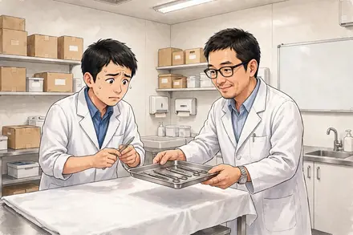

第9話・全9章・完結
切らない日
法医解剖医コメディ ・ 約6,288字 ・ 読了 約15分
指先の小さな傷で、郷田にメスを止められた俊介。初めて一人で解剖台に立つ相沢と、遺体の財布に入っていた『あと一マス』のスタンプカード。俊介が切らない一日の物語。
第1章 切れない朝
五十嵐俊介が自分の指を切ったのは、朝の九時過ぎ、解剖室の器具を点検している時だった。
メスの刃を交換しようとして、ほんの少し、手元が狂った。右手の人差し指の先に、チクッと痛みが走る。見ると、血がにじんでいた。
「……切る側が切ってどうすんねん」
俊介は一人で呟いて、絆創膏を貼った。大した傷ではない。血もすぐ止まった。
事務室に戻ると、会田麻衣が書類から顔を上げた。
「先生、その指、どうしたんですか」
「戦傷や。メスとの戦いに敗れた」
「朝イチの点検で、ですか」
「言うな。解剖医が解剖前に切られる。これ以上の間抜けがおるか」
麻衣は笑いを堪える顔をして、それでも消毒液と新しい絆創膏を、黙って俊介の机に置いた。俊介の机の書類の山には触れない。順番を変えずに、空いた所へ、そっと置く。
その日の解剖は一件だった。
大野誠一、五十六歳。会社員。今朝、自宅の洗面所で倒れているのを、妻が見つけた。病院へ運ばれたが、死亡が確認された。死因の特定と、事件性の有無の確認。それが教室への依頼だった。
俊介は依頼票を見ながら、絆創膏の指で頬を掻いた。
「ほな、始めよか」
その声に、主任教授の郷田正樹が、ゆっくりと顔を上げた。
第2章 教授の判断
「五十嵐。今日はお前、切るな」
郷田の声は静かだった。俊介は目を丸くした。
「え。なんでですか。この程度の傷」
「指先は手技の要や。感覚の鈍った指でメスを持たせるわけにはいかん。それに、解剖する側の傷口は感染の入口や。教室のルールとして、止める」
「教授、それは大げさな」
「大げさで結構」
郷田は立ち上がり、解剖室のドアの前で待っていた相沢直樹を見た。新人の解剖医、二十七歳。今日もメモ帳とペンを握りしめている。
「相沢君。今日は君が主担当や。五十嵐は助手に回れ」
「……えっ」
相沢の顔から、さっと血の気が引いた。俊介も抗議しかけたが、郷田は続けた。
「ちょうどいい。相沢君の勉強にもなる」
それだけ言うと、郷田は自席に戻った。ただ、席に着く前に一度だけ、解剖室の方を長く見た。俊介はその視線の意味までは、読み取らなかった。
解剖室。白衣の相沢が、解剖台の前に立つ。隣に、助手の位置に立つ俊介。いつもと逆の並びだった。
麻衣が、解剖の手順をまとめたチェックリストを相沢に渡した。主担当が代わることを聞いて、朝のうちに用意していたものだった。相沢はそれを受け取り、小さく頭を下げた。
「会田さん、ありがとうございます」
「相沢先生の字で、書き足せるようにしてあります」
俊介はそのやり取りを見て、鼻を鳴らした。
「麻衣ちゃん、俺が主担当の時は、そんなもん作ってくれたことないやん」
「先生には要りませんから」
「……冷たいな」
相沢は笑いそうになるのを堪えて、チェックリストの最初に印をつけた。
「五十嵐先生……ほんまに僕が切るんですか」
「教授の命令や。ほら、背筋伸ばせ。遺体に失礼やぞ」
「先生は、助手って何をするんですか」
「器具渡して、臓器受け取って、記録して、お前の手が止まったら口を出す。……言うとくけどな、相沢」
俊介は絆創膏の指を、そっと曲げ伸ばしした。
「助手の方が、案外忙しいんやで」
第3章 財布の中身
解剖の前に、所持品の確認があった。
遺体と一緒に運ばれてきた大野誠一の持ち物を、麻衣がリストにしていく。スーツのポケット、鞄、そして財布。主担当の相沢も立ち会い、俊介は助手の仕事の合間に、その財布の中身を覗いた。
「うおっ！ きゅんとぴあやん！」
声が、思ったよりずっと大きく出た。
財布のカード入れに、きっちりと畳まれたレシートが何枚も入っていた。全部、同じ店のものだった。秋葉原のコンセプトカフェ、「きゅんとぴあ」。俊介が通う店である。
「先生」
相沢が、静かに言った。
「興奮し過ぎですよ」
「……ああ。解剖室やったな」
俊介は咳払いをして、絆創膏の指で財布を持ち直した。
「俺としたことが。……ほんで、これ見てみ」
レシートの横に、スタンプカード。一マスずつ丁寧に押されたスタンプが並び、あと一マス、という所まで来ていた。特典は記念チェキ一枚。
「あと一マスやん……。うわ、この人、凄いな。金曜の夜に通い詰めて、特典まであと一回やで。ええなあ」
羨ましさが、声ににじみ出ていた。相沢は、今度は何も言わなかった。言うべき言葉が見つからなかったのだ。
俊介はレシートを一枚、指先で広げた。日付は金曜。次のも金曜。その次も金曜。時間はどれも夜の八時から十時の間だった。
注文の欄も、だいたい読めた。入店して、決まった席に座って、推しのドリンクを頼んで。最後の一枚には、見慣れた文字があった。あの店の、あの子の字だった。
「……この人は、金曜の八時にはだいたい入ってるな。ほんで、だいたい二時間おる。帰りの電車の時間から逆算すると――」
「先生」
麻衣がリストの手を止めていた。
「なんでレシート見ただけで、そこまで分かるんですか」
「……一般教養や」
「一般教養に、コンカフェのレシートの読み方は入ってません」
「麻衣ちゃんの一般教養が狭いだけちゃうか」
麻衣はそれ以上追及しなかった。ただ、リストの「レシート・数枚」という記入を、「私物・書類数点」と書き直した。俊介はそれを見て、何も言わなかった。
五十六歳、経理一筋の会社員。金曜の夜の、あと一マス。
俊介はスタンプカードを財布に戻しながら、小さく呟いた。
「……あと一回やったのにな」
第4章 初めての単独
解剖が始まった。
相沢のメスを持つ手は、最初、わずかに震えていた。俊介は助手の位置から、必要な器具を、求められる前に差し出した。臓器を受け取り、トレイに並べ、記録を取る。俊介の手際は、助手としても一流だった。
「先生……なんで僕が次に何を欲しがるか、分かるんですか」
「お前の目の動きで分かる。ほら、ぼーっとすな。切る前に、まずよう見てみ」
俊介の声が、少しだけ変わった。解剖台の前の声だった。
「遺体はな、開ける前からいろいろ言うてる。外表を飛ばすな。急ぐな」
相沢は頷いて、外表の所見を一つずつ声に出して確認した。死斑の出方、硬直の進み方。メモ帳ではなく、記録用紙に直接書いていく。俊介は横から覗き込み、間違いだけを短く正した。
途中、相沢の手が止まった。皮下の出血のような跡を見つけて、声が上ずった。
「先生、これ、外傷じゃ……」
「慌てるな。触ってみ。……どうや」
「……柔らかい、です。出血とは違う」
「死斑や。体の下になってた側に出る、普通のやつや。事件に見えるもんの大半は、普通の死の姿やで。逆もまたあるけどな」
相沢は深く息を吐いて、記録を続けた。俊介は、その横顔を見て少しだけ口元を緩めた。初めての単独解剖で、慌てて、立ち止まって、それでも自分の目で確かめ直す。それで十分だった。
外表が終わり、いよいよ切開に入る。相沢はメスを手に取り、遺体の前で一度、止まった。
「……先生。最初の一太刀って、こんなに重いもんですか」
「重いよ。毎回重い。慣れるのは手つきだけで、その重さには慣れん方がええ」
俊介は一歩下がって、相沢の手元に光が当たるよう、無影灯の角度を直した。助手の仕事だった。
「呼吸せえ。息止めて切るな。……ほら、いけ」
相沢は息を吐いて、メスを入れた。最初の一太刀は浅かった。俊介は何も言わず、次の器具を差し出した。二太刀目は、深さが決まった。
胸を開ける。心臓が出た。
「相沢。心臓を摘む前に、表面を触ってみ。冠動脈や」
相沢は言われた通り、指先で冠動脈をなぞった。途中で、手が止まった。
「……ここ、硬いです。中に、何か詰まってるような」
「ほらな。お前が見つけたんや」
冠動脈の中には、血栓があった。心筋には古い瘢痕もあった。長年の動脈硬化の上に、今朝、血栓が詰まった。急性心筋梗塞。洗面所で倒れた朝と、全部つながった。
相沢はしばらく、心臓を見つめていた。
「映像がなくても……分かるもんなんですね」
「当たり前や。映像は近道にすぎん。解剖の本体は、こっちや」
俊介は記録用紙をトントンと指で叩いた。絆創膏の指だった。
「今日の主担当はお前や。所見の第一稿も、お前が書け」
第5章 真面目一筋
昼過ぎ、妻の大野和代が教室に来た。五十四歳。小さな声で挨拶をして、椅子の端に座った。
死因の説明は、主担当の相沢が行った。緊張で声は硬かったが、急性心筋梗塞であったこと、苦しむ間もないくらい急な経過だったと考えられること、事件性を示す所見はなかったことを、一つずつ丁寧に伝えた。
和代はハンカチを握りしめて聞いていた。
「そうですか……。主人は、真面目一筋の人でした。経理の仕事ばかりで、夜遅く帰るのも、全部残業で」
俊介は、横で黙って聞いていた。金曜の夜のレシートのことは、言わなかった。言うべきことではなかった。
「金曜なんか、いつも一番遅くて。……でも、帰ってきた時の顔は、悪くなかったんです。疲れてはいたけど」
和代は、そこで小さく首を傾げた。何か言いかけて、やめた。俊介も相沢も、その先を聞かなかった。
「最近、疲れたって、よく言ってたんです。もっと早く、病院に行かせればよかった」
「大野さん」
俊介が、静かに口を開いた。
「心臓の古い傷から見ると、ご主人は何年も前から、心臓に負担を抱えてはりました。それでも今朝まで普通に暮らして、仕事に行く支度をしてはった。それは、ご主人が自分の体と上手に付き合ってこられた証拠でもあります」
和代の目から、涙がこぼれた。
「ありがとうございます……」
帰り際、和代は所持品を受け取った。麻衣が整えたリストと一緒に、財布も返された。その中身に何が入っているかは、教室の誰も口にしなかった。
それは、この教室の仕事ではなかった。
第6章 書かないこと
夕方、相沢が所見の第一稿を持ってきた。
読み進めて、俊介は一か所で指を止めた。所持品の欄に、店名まで書かれていた。
「相沢。ここ、消せ」
「え。所持品の記録は正確に、と」
「所持品の『有無』は書く。でもな、所見は死因を書く紙や。財布の中のレシートの店名は、死因と関係ない。関係ない故人の私事は、この紙には載せん」
相沢はペンを止めた。
「……載せたら、どうなるんですか」
「この紙はな、いろんな人の目に触れる。警察も、保険の人も、時には裁判所も読む。死んだ人の秘密は、死んだ人のもんや。俺らが広めるもんやない」
「分かりました。消します」
相沢は店名を消し、「私物・書類数点」と書き直した。麻衣が昼間、リストに書いたのと同じ文言だった。
「もう一か所や」
俊介は、死因の欄を指した。そこには「急性心筋梗塞の疑い」と書かれていた。
「血栓は、お前が自分の指で触って見つけたんやろ。瘢痕もあった。『疑い』は弱い。出たもんは、出た通り書け」
「……前にも、似たことを言われました。書きすぎた時は止められて」
「そうや。あん時は出てへんもんを書いたから止めた。今度は逆や。出たもんを弱めるな。所見はな、強くも弱くもせん。出たもんだけを、そのまま書く。それが全部や」
相沢は頷いて、「疑い」の三文字を消した。その代わり、根拠になった所見を一つ、書き足した。文章が少しだけ、前に進んだ。
俊介はそれを見て、少し笑った。
「麻衣ちゃんは最初からそう書いてたな」
「会田さんは、すごいですよね。言われなくても、線引きができてて」
「……ほんまやな」
俊介は記録用紙を閉じた。その拍子に、朝切った指先が、わずかに疼いた。
第7章 あとひとつ
片付けが終わった解剖室で、俊介は自分の財布を取り出した。
カード入れの奥から、使い込んだスタンプカードを引っ張り出す。きゅんとぴあのカードだった。スタンプは、半分ほどで止まっていた。
「……俺も最近、行けてへんな」
最後のスタンプの日付は、二か月近く前だった。解剖が立て込んで、週末は寝て過ごすことが多かった。
大野誠一のカードは、あと一マスだった。金曜の夜に通い続けて、あと一回で特典、という所まで来ていた。
（あの人も、金曜が楽しみやったんやろな）
俊介はカードを財布に戻した。戻しながら、もう一度取り出して、スタンプの数を数え直した。やることが、子供じみていた。
「……先生、今日はもう帰るんですか」
解剖室の片付けに来た相沢が、素朴に聞いた。
「ん？ いや、まだ書類が」
「さっきから、時計を三回見てます」
「見てへん」
「見てます。あと、さっき鼻歌も」
俊介は口を閉じた。新人に観察される助手、というのも、なかなか屈辱的だった。観察眼を育てたのは自分だ、というのが、さらに屈辱的だった。
「先生」
振り向くと、麻衣が書類を抱えて立っていた。いつの間に来ていたのか、足音はしなかった。
「何時ですか、今」
「……四時半ですけど」
「そか」
俊介は、やたらと落ち着きのない手つきで白衣を脱いだ。絆創膏の指は、もうほとんど痛まなかった。
麻衣は何も言わなかった。ただ、俊介の机の上に、帰り道の電車の時刻表――秋葉原方面の――を、前から置いてあったかのような顔で、そっと置いた。
俊介はそれに気づかないふりをした。麻衣も、気づかれたことに気づかないふりをした。
第8章 通知
五時前、事務室のファックスが鳴った。
麻衣が受け取り、用紙を持って郷田のところへ行った。警視庁からの通知だった。来月の、解剖依頼の配分に関する協議の日程。場所と、求められる提出資料の一覧が、事務的に並んでいた。
郷田は眼鏡を押し上げて、用紙を最後まで読んだ。
「……分かった。資料は私の方で揃える」
「教授、私もお手伝いします」
「いや、いい。いつもの数字だ」
郷田は用紙をファイルに挟んだ。その手つきは、いつも通りだった。けれど麻衣は、教授がファイルを置いた後も、しばらく窓の外を見ていたことに気づいた。
そのファイルには、過去の年の配分資料も、同じように挟まれていた。何年分もの数字を、この教授は一人で受け止めてきたのだ、と麻衣は思った。口には出さなかった。
解剖室の片付けを終えた相沢が、達成感のある顔で戻ってきた。俊介は、もう帰る支度を半分終えていた。
「五十嵐先生、今日はありがとうございました。僕、一人で」
「主担当はお前や。俺は助手やっただけや」
「でも」
「相沢」
俊介は笑って、絆創膏の指を立てた。
「お前が見つけた血栓や。胸張れ」
郷田はその様子を、自席から見ていた。何も言わなかった。言うべき言葉は、もう少し先の日のために、取ってあるのかもしれなかった。
第9章 軽い足取り
夕方六時、俊介は教室を出た。
駅へ向かう足取りは、朝のそれとは別人のように軽かった。指の絆創膏は、もう取ってもよさそうだったが、そのままにしておいた。何となく、今日の記念のようだった。
秋葉原までは、電車で二十分。今夜は金曜だった。大野誠一が通い続けた、金曜の夜だった。
（あと一マス、か）
俊介は改札を抜けながら、財布のカードのことを思った。自分の分は、まだ半分だ。あの人の分は、永遠にあと一マスのままだ。
（……あのスタンプカード、もらっといたらよかったかな）
ふと、よからぬ考えが浮かんだ。次の瞬間、俊介は小さく首を振った。
（アカン、アカン、それはアカン）
故人のスタンプを横取りしようとする解剖医が、どこにおる。おらん。おらんけど、一瞬でも考えた自分は、ここにおる。
だから、というわけではない。ないのだが。
電車に揺られながら、俊介は小さく決めた。今夜は久しぶりに、きっちり楽しもう。あの人の分まで、とは言わない。言わないけれど、そういう夜があってもいいはずだった。
教室では、麻衣が戸締まりをしていた。
俊介の机の上には、時刻表が残されていた。その横に、麻衣は新しい絆創膏を一枚、置いた。明日の朝、先生がまた何か言い訳をしながら、それを貼る気がしたからだった。
麻衣は電気を消して、ドアを閉めた。
教室の金曜日が、静かに終わった。
― 完 ―
読んでくださって、ありがとうございます。
一言でも構いません、感想をいただけると励みになります。